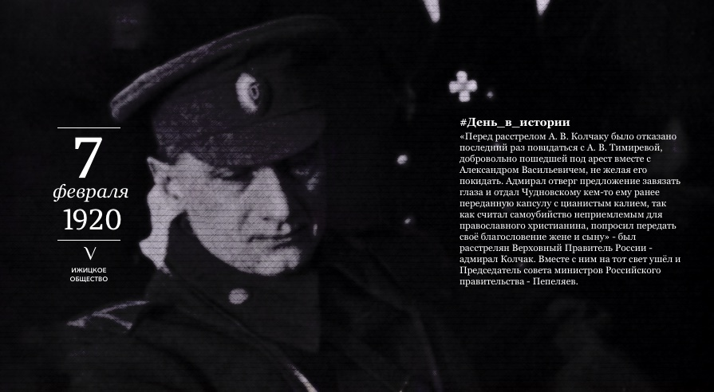

Расстрел Колчака
«Перед расстрелом А. В. Колчаку было отказано последний раз повидаться с его любимой — А. В. Тимиревой, добровольно пошедшей под арест вместе с Александром Васильевичем, не желая его покидать. Адмирал отверг предложение палачей завязать глаза и отдал Чудновскому кем-то ему ранее переданную капсулу с цианистым калием, так как считал самоубийство неприемлемым для православного христианина, попросил передать своё благословение жене и сыну.»

Личность Колчака неоднозначна. Одни видят в нем прихвостня западных держав, другие считают его шансом России на светлое будущее, который она упустила. Тем не менее он был схвачен красными и расстрелян. Однако Колчак до последней минуты своей жизни сохранял ледяное достоинство. О том вечере до сих пор ходят легенды.
Александр Васильевич родился в 1874 году в семье дворян. В их роду все были военными. Эту стезю выбрал и сам Александр. Он оказался талантливым полководцем и быстро продвигался по карьерной лестнице. В конце I мировой войны он уже был адмиралом.
После этого была революция, смута, началась гражданская война. Колчак примкнул к белым и провозгласил себя Верховным правителем России и Верховным главнокомандующим Русской армии. Воевал, потом его схватили красные.
Заместитель председателя комиссии в своих мемуарах о белом адмирале писал так: «Колчак держался как военнопленный командир, проигравший кампанию армии, и с этой точки зрения держался с полным достоинством» За ним пришли вечером и зачитали решение революционного комитета. Колчак был удивлен: «Как? А суда не будет?», на что ему ответили, что нет. Вообще его удивление было странным, поскольку уже не первый год люди убивали друг друга без суда и следствия.
Перед казнью он попросил о свидании с его гражданской супругой. Колчаку запретили. Фактически красные не исполнили последнюю волю приговоренного к смертной казни, что с моральной точки зрения бесчеловечно. Но это его не подкосило.
Когда уже Колчака вели к месту расстрела, он спросил у командира красных, кто он по званию. На что тот не хотя ответил - комиссар. Тогда адмирал сказал, что по уставу его расстрелом может командовать, либо равный по званию, либо старший, а поскольку таких среди красных нет, он вызвался сам командовать собственным расстрелом.
Комиссара Чудновского это все жутко раздражало, он до последнего вел себя вызывающе и пренебрежительно. Красные потом напишут, что Чудновский жутко комплексовал из-за своего роста и когда видел, спокойное достоинство этого статного прославленного русского полководца, просто свирепел.
Тем не менее, в ночь с 6 на 7 февраля 1920 года по приказанию адмирала российской армии Александра Васильевича Колчака расстрельный караул произвел залп, который забрал жизнь достойного русского военноначальника. У его палачей жизнь тоже не заладилась, почти все они в 1937-38 году будут осуждены и расстреляны.
Однако большевики были другого мнения о Колчаке и его роли в гражданской войне. Была у них и своя версия того, как проходила казнь.
Александр Васильевич родился в 1874 году в семье дворян. В их роду все были военными. Эту стезю выбрал и сам Александр. Он оказался талантливым полководцем и быстро продвигался по карьерной лестнице. В конце I мировой войны он уже был адмиралом.
После этого была революция, смута, началась гражданская война. Колчак примкнул к белым и провозгласил себя Верховным правителем России и Верховным главнокомандующим Русской армии. Воевал, потом его схватили красные.
Заместитель председателя комиссии в своих мемуарах о белом адмирале писал так: «Колчак держался как военнопленный командир, проигравший кампанию армии, и с этой точки зрения держался с полным достоинством» За ним пришли вечером и зачитали решение революционного комитета. Колчак был удивлен: «Как? А суда не будет?», на что ему ответили, что нет. Вообще его удивление было странным, поскольку уже не первый год люди убивали друг друга без суда и следствия.
Перед казнью он попросил о свидании с его гражданской супругой. Колчаку запретили. Фактически красные не исполнили последнюю волю приговоренного к смертной казни, что с моральной точки зрения бесчеловечно. Но это его не подкосило.
Когда уже Колчака вели к месту расстрела, он спросил у командира красных, кто он по званию. На что тот не хотя ответил - комиссар. Тогда адмирал сказал, что по уставу его расстрелом может командовать, либо равный по званию, либо старший, а поскольку таких среди красных нет, он вызвался сам командовать собственным расстрелом.
Комиссара Чудновского это все жутко раздражало, он до последнего вел себя вызывающе и пренебрежительно. Красные потом напишут, что Чудновский жутко комплексовал из-за своего роста и когда видел, спокойное достоинство этого статного прославленного русского полководца, просто свирепел.
Тем не менее, в ночь с 6 на 7 февраля 1920 года по приказанию адмирала российской армии Александра Васильевича Колчака расстрельный караул произвел залп, который забрал жизнь достойного русского военноначальника. У его палачей жизнь тоже не заладилась, почти все они в 1937-38 году будут осуждены и расстреляны.
Однако большевики были другого мнения о Колчаке и его роли в гражданской войне. Была у них и своя версия того, как проходила казнь.
Отправить
ИМЯ:
ыоватл
ыоватл